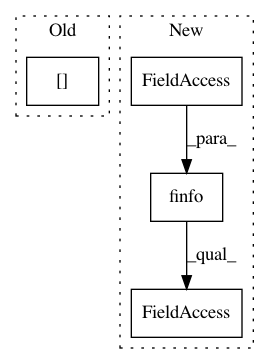

ef2e13c4719c6a9263748c5428ee070893763c5b,pyro/distributions/hmm.py,,_logmatmulexp,#Any#Any#,36
Before Change
Numerically stable version of ``(x.log() @ y.log()).exp()``.
x_shift = x.max(-1, keepdim=True)[0]
y_shift = y.max(-2, keepdim=True)[0]
xy = torch.matmul((x - x_shift).exp(), (y - y_shift).exp()).log()
return xy + x_shift + y_shift
After Change
Numerically stable version of ``(x.log() @ y.log()).exp()``.
finfo = torch.finfo(x.dtype) // avoid nan due to -inf - -inf
x_shift = x.max(-1, keepdim=True).values.clamp(min=finfo.min)
y_shift = y.max(-2, keepdim=True).values.clamp(min=finfo.min)
xy = safe_log(torch.matmul((x - x_shift).exp(), (y - y_shift).exp()))
return xy + x_shift + y_shift
In pattern: SUPERPATTERN
Frequency: 3
Non-data size: 4
Instances
Project Name: uber/pyro
Commit Name: ef2e13c4719c6a9263748c5428ee070893763c5b
Time: 2020-04-20
Author: fritzo@uber.com
File Name: pyro/distributions/hmm.py
Class Name:
Method Name: _logmatmulexp
Project Name: nilearn/nilearn
Commit Name: fd0ae4e922f86fb7910d1d70318dbda4d14238c3
Time: 2013-04-05
Author: philippe.gervais@inria.fr
File Name: nisl/signals.py
Class Name:
Method Name: _standardize
Project Name: SPFlow/SPFlow
Commit Name: 5f12688e83bfb0acadb6b8ab56c293ed123e3a7a
Time: 2019-03-14
Author: molina@cs.tu-darmstadt.de
File Name: src/spn/algorithms/Gradient.py
Class Name:
Method Name: sum_gradient_backward